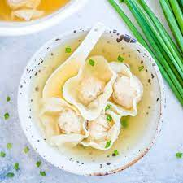

Wonton Soup

Wonton Soup Description
This recipe contains all you need to make the perfect wonton soup for any chilly day. Read below to find out more.
Ingredients
Instructions
Steps below
- Combine the broth, soy sauce, garlic, and ginger. Bring to a boil.
- Add your produce and wonton wrappers to the pot. Simmer until the wrappers are tender.
- Remove from heat and stir in the sesame oil, and it is ready to serve.